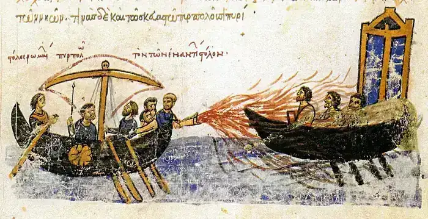
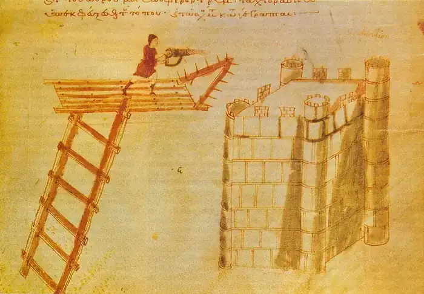
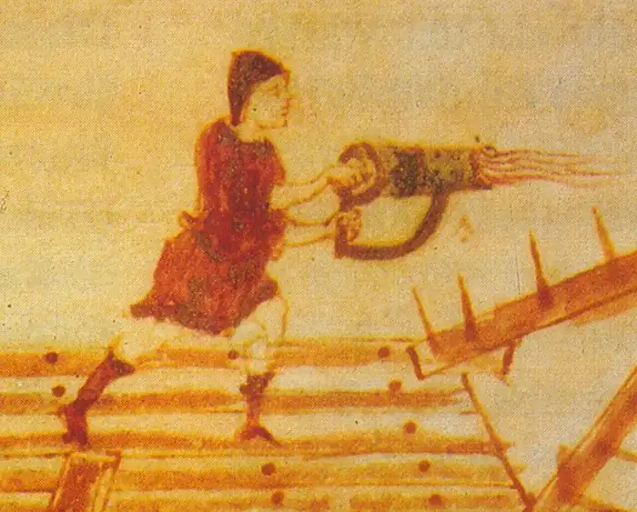

The weapon
Greek fire was a Byzantine incendiary used from the seventh century, most famously against Arab fleets attacking Constantinople. It was projected through a bronze siphon mounted on a ship, and it burned on water — which is the property that made it terrifying and the property that identifies it chemically.
Maps, diagrams and images






The composition was a state secret, restricted to a few families, and no contemporary recipe survives. Candidate ingredients include naphtha or crude petroleum, quicklime (which reacts with water and generates heat), sulphur, and resin. The exact mixture is unknown.
What can be said
Reconstructions burn on water, which is consistent with a petroleum base plus a calcium-based component. The 'unquenchable' reputation is partly propaganda and partly real: water spreads a petroleum fire rather than extinguishing it, and quicklime makes it worse.
The weapon's importance is not in dispute — it saved Constantinople more than once — and its chemistry is a genuine loss, because a technology that was deliberately kept secret left no technical record.
Documented: the weapon, its use, and its effect on sieges.
Documented: the siphon delivery system, from depictions and descriptions.
Unknown: the formula. No surviving recipe.
Plausible: a petroleum base with quicklime and sulphur.
The honest label: live debate about the chemistry of a weapon whose existence is not in doubt.
Why it is in the archive
Because it is the archive's example of a real ancient technology that is genuinely lost — and of how a state secret, kept well enough, becomes indistinguishable from a legend.
Open resources on this topic
- BookGreek Fire — Winston Graham · 1957 (Internet Archive, free to read)
- BookGreek Fire — Winston Graham · 1957 (Internet Archive, free to read)
- BookGreek fire : the fourth book of Talon — Boschert, James · 2013 (Internet Archive, free to read)
- PapersOpen-access articles: DOAJ · PubMed Central · Internet Archive Scholar
- BooksPublic-domain and borrowable copies: Open Library · Project Gutenberg · Google Books
More images
Cite this page
Momin, S. (2026). Greek Fire. The Larger World Archive. https://drsamonline.github.io/LARGE_GLOBE/greek-fire.htmlMomin, Sohil. “Greek Fire.” The Larger World Archive, 2026, https://drsamonline.github.io/LARGE_GLOBE/greek-fire.html.Momin, Sohil. “Greek Fire.” The Larger World Archive, 2026. https://drsamonline.github.io/LARGE_GLOBE/greek-fire.html.@misc{greek2026greek,
author = {Momin, Sohil},
title = {Greek Fire},
year = {2026},
howpublished = {The Larger World Archive},
url = {https://drsamonline.github.io/LARGE_GLOBE/greek-fire.html},
note = {Last reviewed 20 November 2026}
}Last reviewed 20 November 2026 · Corrections policy · this page is not peer reviewed
Sources for this page
- Wikipedia, “Greek fire” — the weapon, the sources and the chemistryen.wikipedia.org
- Wikipedia, “Byzantine navy” — the fleet that used iten.wikipedia.org
- Wikipedia, “Naphtha” — the likely baseen.wikipedia.org
- Wikipedia, “Early thermal weapons” — the family it belongs toen.wikipedia.org